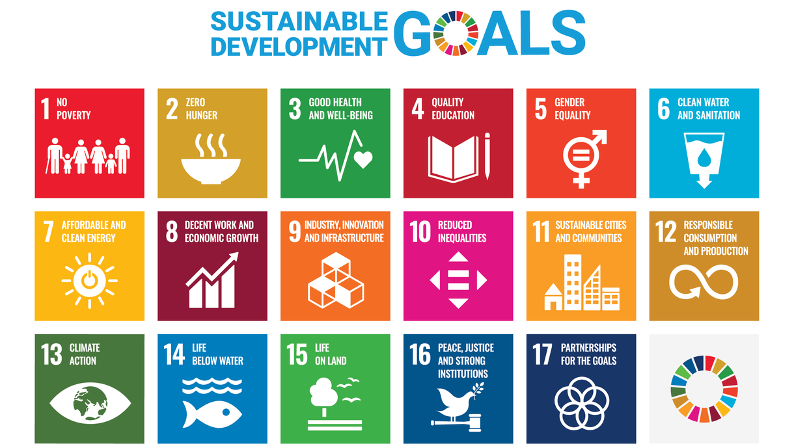

Mission
1. Create a partnership to promote Sustainable Development Goals (SDGs), United Nations by using Bamboo and its application in South Asia.
2. Cooperative to develop an international research project or social or development or responsibility projects relate Bamboo and Bamboo charcoal innovation and bio degradable
3. Improve the insightfulness of international SDG courses or program to promote global Bamboo cultivation and propagation of talent.

4. Develop international bilateral or multilateral exchanges and cooperation to jointly promote international SDG issues or field practice by using Bamboo.
5. Organize Indo- Taiwan cooperation and organised International Seminars, workshops, forums, Expo or seminars on Bamboo Plantation, Biotechnology investment, trade, etc.
6. Jointly promote South-South Cooperation for transfer of Technology, skill development and areas of technical cooperation with Taiwan and South Asia.
7. Jointly facilitate exchange of Young Scientists, Artisans, farmers, Designers, Experts for study and R&D activities between Taiwan and South Asian Nations.
8. Other related activities that promote the success of this project.
9. Promote the importance of World Bamboo Day on 18th September founded by Kamesh Salam.